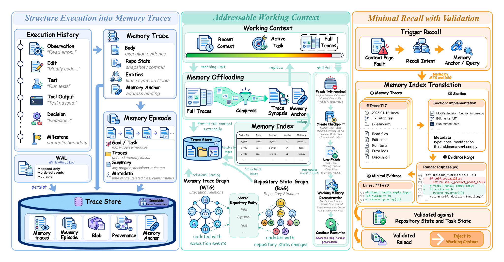

Undergraduate Student, School of Computer Science
Shanghai Jiao Tong University · Zhiyuan Honors Program
I am an undergraduate student at the School of Computer Science, Shanghai Jiao Tong University,
and a member of the Zhiyuan Honors Program.
My research interests mainly lie in coding foundation models, long-horizon agents,
and self-improving AI. I am currently focusing on agent memory,
parametric memory, coding-model post-training, and
recursive self-improvement — especially how models and agents can accumulate,
update, and reuse experience over long-term interaction. I also have a background in
database systems and data management, which led me to study memory from a
data-management perspective and later move toward agentic coding, long-horizon memory,
and model self-improvement.
Database Systems & Data Management — database–LLM interaction, NL2SQL / Text-to-SQL, data-management foundations for memory systems
News
Oct 2026MemTrace: State-Consistent Memory for Long-Horizon Coding Agents is available on arXiv and under review at ICLR 2027.
Jun 2026Are We Ready For An Agent-Native Memory System? is available on arXiv and under review at VLDB.
Mar 2026Dial: A Knowledge-Grounded Dialect-Specific NL2SQL System appears in PVLDB 2026.
2026Tensor-Network Physical Pages for Quantum-Ready Data Management is part of QCDKM 2026.
Selected Publications & Manuscripts
Hongming Xu denotes my name in the author lists.

Overview of MemTrace. From left to right, MemTrace structures execution into state-bound traces, maintains an addressable working context, and restores only validated evidence needed to resume execution.
MemTrace: State-Consistent Memory for Long-Horizon Coding Agents
Hongming Xu, Le Zhou, ZhongHe Jin, Xiang Zhang, Bo Tang, Zhiyu Li, Xuanhe Zhou, Juncheng Zhang
Under review · ICLR 2027First author
A state-consistent memory system that combines structured execution traces with repository
grounding to validate historical evidence before reuse. Evaluated across three software-engineering
benchmarks and two coding-agent harnesses, consistently improving the primary metric over native
memory strategies.
Dial studies dialect-specific NL2SQL for heterogeneous database systems, where different SQL dialects
introduce distinct syntax, functions, and execution constraints. I contributed to natural-language
preprocessing, dialect-aware logical planning, and knowledge retrieval — including the design and
initialization of HINT-KB, iterative feedback and semantic correction, and failure analysis.
Under review · VLDBAgent memory / data management systems
A systematic study of agent memory across representation and storage, extraction, retrieval/routing,
and maintenance. We evaluate task effectiveness, retrieval fidelity, dynamic-update robustness,
long-term stability, and runtime cost across diverse workloads.
Tensor-Network Physical Pages for Quantum-Ready Data Management
QCDKM 2026Quantum database / approximate data management
TN-Page is a tensor-network physical-page representation for approximate data management and quantum
backends. We study workload-aware bucketization, tensorization, factorization, and backend-aware
encoding, evaluating fidelity, compression, qubit usage, and gate depth.
Research Experience
MemTensor
Aug. 2026 – Present
Research Intern · Mentor: Juncheng Zhang (Tsinghua University)
Contribute to coding-oriented post-training of a 284B-parameter DeepSeek-V4-Flash-0731 foundation model: design and synthesize software-engineering tasks, curate and filter training data and execution trajectories, and evaluate post-trained checkpoints on coding and repository-level tasks.
Analyze capability gains, failure modes, and remaining skill gaps to guide subsequent data selection, task construction, and training iterations.
Explore memory mechanisms for long-horizon coding agents — persistent execution history, repository-state alignment, and reliable reuse of historical evidence; led the first-author MemTrace project.
Shanghai Jiao Tong University — Theseus Lab
Aug. 2025 – Jun. 2026
Undergraduate Researcher · Supervisor: Prof. Xuanhe Zhou
Worked on Dial, a knowledge-grounded dialect-specific NL2SQL system: dialect-aware logical planning and construction of HINT-KB, including knowledge organization, initialization, retrieval components, semantic correction, and failure analysis for heterogeneous SQL dialects.
Extended this data-management perspective toward agent memory through Are We Ready For An Agent-Native Memory System?, studying memory representation and storage, extraction, retrieval, maintenance, and systematic evaluation — forming the basis for later work on long-horizon coding-agent memory.
Honors
Zhiyuan Honors ScholarshipShanghai Jiao Tong University